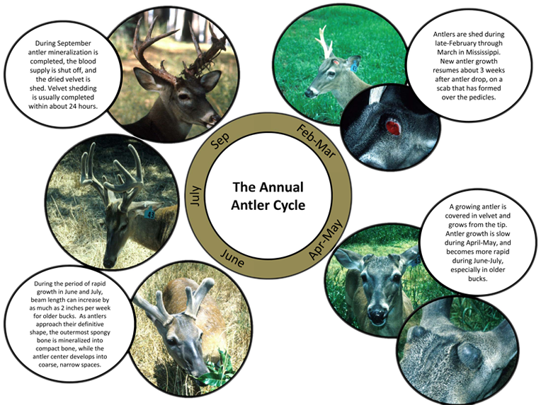

Antlers
The annual casting and growth of new antlers is an important part of the whitetail's mystique. Antlers grow rapidly from their pedicle (base) while in velvet during the spring and summer, as fast as 3/4 inch/week for yearlings and 1 1/2 inches per week for adults during peak growth (Jacobson and Griffin 1983). Growth rate slows dramatically during late summer while mineralization of the antler is completed. Restriction of blood supply around the autumn equinox causes the velvet's death; when dry enough, velvet is removed in as little as 24 hours by thrashing on vegetation.
Well after the breeding season, cells called osteoclasts de-mineralize the bone along an abscission line where the pedicle meets the antler.
This weakened attachment combined with the weight of the antler causes it to drop off or be cast. Although described as an abscission "line," the surface of the detached antler base is rough in texture. The resulting surface may be either flush with or extend beyond the burr or coronet.
Brain abscesses, resulting from secondary infection following injury to the frontal bone or pedicle, may result in a jagged abscission line projecting deep into the pedicle and frontal bone.
Once the antler is cast, the top of the pedicle can be considered an open wound. This area reacts like any wound, bleeding for a short period and developing a scab-like covering called a "wound epithelium" within 2-3 weeks. Antler growth begins shortly after completion of the wound epithelium in white-tailed deer and most members of the deer family; in contrast, moose antlers do not begin growth until two — three months after antler casting.
Beneath the wound epithelium are cells which will create the antler growth zones.
The covering of the growing antler takes on the appearance of shiny velvet because sparse hairs grow straight out and are coated with oily secretions from the hair follicle. Beneath the velvet epidermis and dermis of the growing antler is a thick, fibrous protective membrane, called perichondrium when it covers the cartilagenous growth stage and periosteum when it covers the boney stage of the growing antler. Beneath the velvet and perichondrium lies the mesenchyme growth zone, an area of rapid cell generation and growth. In the chondroprogenitor region these young cells begin to differentiate into chondrocytes and to form the columnar structure characteristic of cartilage and bone. The enlarged and columnar chondrocytes then begin the process of mineralization. Once mineralized, chondroclasts resorb the cartilage, and bone is laid down on the remaining "scaffold" by osteoblasts. For more details on this process see the review by Price et al. 2005.
There are two types of bone within an antler, spongy bone and compact (cortical) bone. Spongy bone makes up the inner portion and is less dense, softer, and weaker. Spongy bone is highly vascularized during growth, which allows the transport of nutrients and growth regulating hormones. Compact bone forms the outer shell of the antler, and its greater density and stiffness provide strength for fighting. Spongy bone makes up about half the diameter of an average antler (McDonald et al. 2005), although there is considerable variation among animals.
Fur
Whitetail deer start growing their thin summer coat in spring. These thin coats allow for maximum heat loss. They have a red appearance throughout summer until they shed their thin coat in August and September. Winter coats replace the short reddish hair with longer brownish-grey hair.